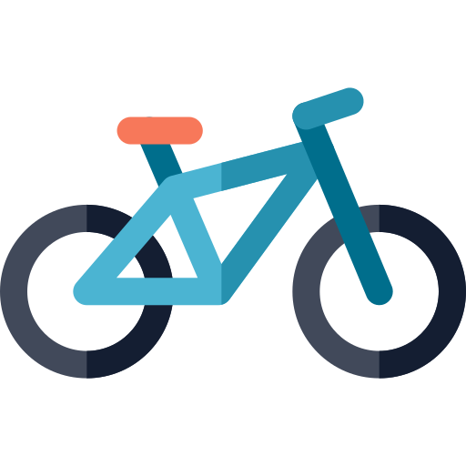

2026-08-08
Transforming raw, unstructured ride logs into an automated spatial-analytics ecosystem that powers interactive urban-mobility insights for Jersey City (2025–2026).
.hyper).How does weather impact urban bike-share demand across different neighborhoods and user segments?
A unified data engine combining micro-mobility transactions, meteorological parameters, and geographic boundaries into a single reporting layer.
┌──────────────────────────────────────────────────────────────────────────────────┐
│ DATA SOURCES LAYER │
│ Citi Bike Trip Archives (CSV) │ Open-Meteo Weather API │ GeoJSON Neighborhoods │
└────────────────────────┬───────────────────┬─────────────────────────┬───────────┘
│ │ │
▼ ▼ ▼
┌──────────────────────────────────────────────────────────────────────────────────┐
│ PYTHON PROCESSING ENGINE (`utils`) │
│ - Deduplication, Null Handling & Schema Normalization │
│ - Feature Engineering: Geodesic Distances, Durations & Time Categories │
│ - Spatial Analysis: GeoPandas Points-in-Polygons (`sjoin`) │
└────────────────────────┬─────────────────────────────────────────┘
│
▼
┌──────────────────────────────────────────────────────────────────────────────────┐
│ DOCKERIZED POSTGRESQL / POSTGIS STORAGE │
│ - Geometry Tables (`ST_Within`, `EPSG:4326`) │
│ - Materialized View (`mv_tableau_citibike_dashboard`) + GIST Indexing │
└────────────────────────┬─────────────────────────────────────────┘
│
▼
┌──────────────────────────────────────────────────────────────────────────────────┐
│ TABLEAU VISUAL ANALYTICS LAYER │
│ - Hyper Extract (`.hyper`) for In-Memory Performance │
│ - Interactive Dashboard (`mv_citibike/Dashboard1`) with Global Actions │
└──────────────────────────────────────────────────────────────────────────────────┘.hyper): Engineride_id, start/end timestamps, station names, coordinates, and member_casual user tier.Modular helper functions in utils.py automate data transformation and feature enrichment:
__MACOSX).ride_id.GeoPandas)Before pushing data to the database, spatial coordinates were validated and joined programmatically:
import geopandas as gpd
# Convert stations to Spatial Point Geometries
stations_gdf = gpd.GeoDataFrame(
df,
geometry=gpd.points_from_xy(df.start_lng, df.start_lat),
crs="EPSG:4326"
)
# Spatial Join with Neighborhood Polygons
stations_with_neighborhood = gpd.sjoin(
stations_gdf,
neighborhoods_gdf,
how="left",
predicate="within"
)┌────────────────────────────────────────────────────────┐
│ FOLIUM DENSITY HEATMAP │
│ [ High Density Hotspots at Transit Hubs ] │
└────────────────────────────────────────────────────────┘
│
▼
┌────────────────────────────────────────────────────────┐
│ PLOTLY CHOROPLETH OVERLAY │
│ [ Neighborhood Aggregations & Flow Distributions ] │
└────────────────────────────────────────────────────────┘To build a production-ready system, data was loaded into a containerized PostgreSQL / PostGIS instance via Docker.
jersey_city: Cleaned individual trip transactions (2025–2026).jersey_weather: Daily historical weather metrics.jersey_city_neighborhoods: Neighborhood boundary polygons.jc_2025_stations: Station locations & geometries.Instead of forcing Tableau to recalculate complex spatial joins on every filter click, a wide Materialized View was engineered at the database layer.
CREATE MATERIALIZED VIEW mv_tableau_citibike_dashboard AS
SELECT
r.ride_id, r.rideable_type, r.member_casual,
r.started_at, r.ended_at, r.ride_date, r.ride_year, r.ride_month, r.ride_hour,
r.ride_duration_minutes,
start_n.neighborhood AS start_neighborhood,
end_n.neighborhood AS end_neighborhood,
w.temperature_2m_mean, w.precipitation_sum
FROM jersey_city r
LEFT JOIN jersey_weather w ON r.ride_date = w.date
LEFT JOIN jersey_city_neighborhoods start_n ON ST_Within(r.start_geom, start_n.geometry)
LEFT JOIN jersey_city_neighborhoods end_n ON ST_Within(r.end_geom, end_n.geometry);ride_date, member_casual, neighborhood).mv_tableau_citibike_dashboard..hyper Extractmv_citibike/Dashboard1The complete interactive visual dashboard is published and accessible live on Tableau Public.
This project demonstrates a full End-to-End Data Analytics Pipeline:
Web Data → Python ETL → Spatial Joins → PostGIS → Materialized View → Tableau Extract → Interactive Dashboard
Decoupling data engineering from visual reporting produces a scalable, production-grade system.
Data Analytics Portfolio Project
Tech Stack:
Python · pandas · GeoPandas · Folium · PostgreSQL · PostGIS · Tableau
Show less LinkedIn
aaaa
